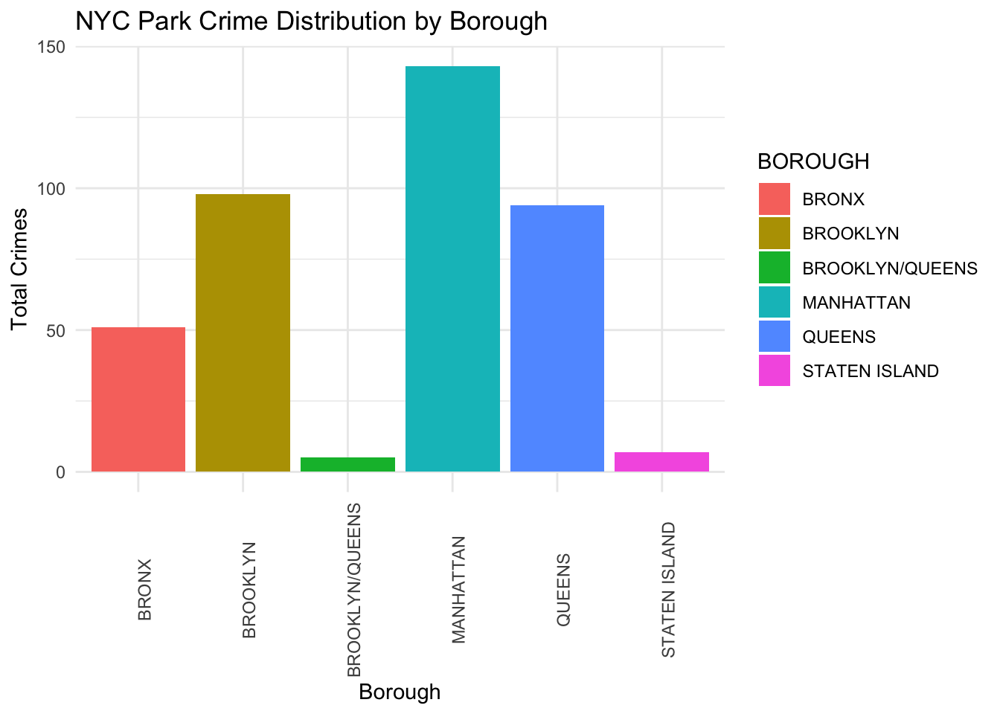

As we are studying crimes at NYC parks and potential reasons, we collected three datasets: crimes, unemployment, and mobility data.
First, we collected crime data in NYC from NYPD official websites focused on crime statistics. The link for the data is NYPD Crime Statistics. The data covers quarters from 2014 to 2023. The data for each quarter shows features like numbers of crimes, park sizes, and boroughs. For our study, we focused on three factors: total number of different types of crimes, park size categories, and boroughs.
Second, we collected unemployment data from U.S. Bureau of Labor Statistics official website focused on NYC area. The link of data is NYC Unemployment Statistics. Additionally, BLS Data Finder offered on this website is able to search unemployment data for NYC. Monthly unemployment data is available from 2013 to 2023.
Last, we looked at high level mobility data from Google Community Mobility Reports. The link of data is Mobility Data. Daily data of movement trend in places such as parks is available in the Covid-19 period. A few restrictions on this data include: it is only available from February 2020 to October 2022, and the data must be scraped from the published reports. If we want to use the data, we will have to use a third party source that has scraped data into a csv file. The link for a potential scrape is from this GitHub Repo.
2.2 Research Plan
Time series analysis for crimes data. We conducted time series analysis to look into components including long term trends, seasonality (systematic, calendar related movements), and irregularity (unsystematic, short term fluctuations).
Heatmaps and bar charts for crimes data. We illustrated crimes data in heatmaps based on boroughs and periods to find time and regional differences. Bar charts are used to show the specific numbers of crimes for boroughs.
Relationship between crimes and employment rate. We looked into trends for total number of crimes and unemployment rates both annually and quarterly. We first demonstrated these two variables in scatterplots.
Relationship between crimes and mobility data. For February 2020 to October 2022, we looked into the number of crimes and park attendance levels, investigating whether visitor flow affects crimes.
2.3 Missing value analysis
2.3.1 Crimes Data
First, we examine the crimes datasets. We will begin by first pulling data for 3Q23 for a high level overview. After determining data cleans, we will merge data for multiple quarters. We can see that there are few missing values in our data. We can just delete the records with missing values.
Code
library(readxl)nyc_park_crime_stats_q3_2023 <-read_excel("~/Desktop/nyc-park-crime-stats-q3-2023.xlsx") #read data
library(ggplot2)borough_data =as.data.frame(borough_crime_totals)ggplot(borough_data, aes(x = BOROUGH, y = Total_Crimes, fill = BOROUGH)) +geom_bar(stat="identity") +theme_minimal() +labs(title="NYC Park Crime Distribution by Borough", x="Borough", y="Total Crimes") +theme(axis.text.x =element_text(angle =90))

2.3.2 Unemployment Rate Data
Then, we examine the dataset for unemployment rates.
It’s obvious that the missing values are average unemployment rates for each year and the last two months in 2023. For the average rates, we can directly compute the average rates based on monthly rates.
As for missing values for the last two months in 2023, it’s reasonable because there is no data available yet for months in the future. We can just ignore the missing values here.
The following line graph is a time series visualization showing the variation in unemployment rates for each month across different years. There are no gaps in this plot, verifying no missing values in the dataset.